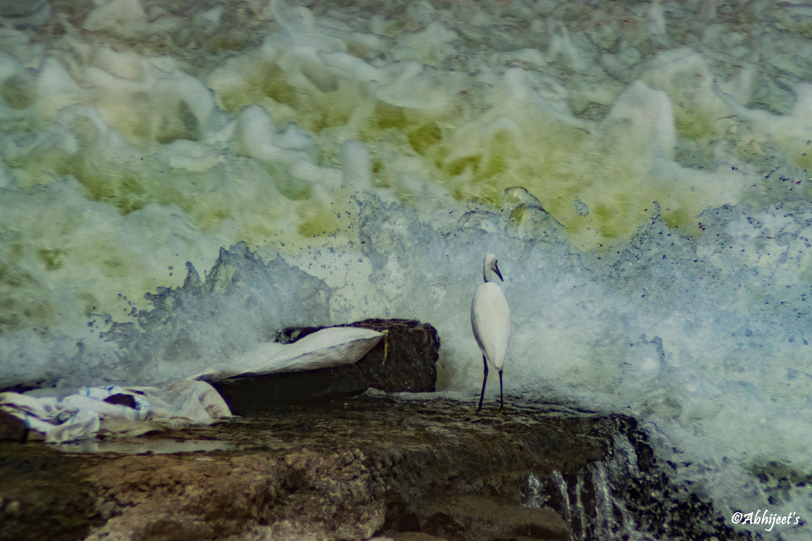
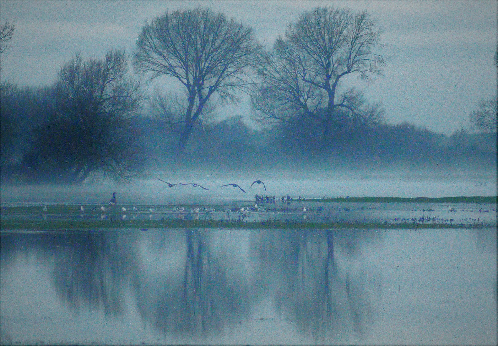

Types of photography: Landscape Nature Wildlife Bird
Introduction: I am researcher by profession, currently working at the Indian Institute of Science, Bangalore, India. I try to find time to look for nature around me and snap it in my camera
Origin story: I use to take photos with my mobile phone whilst travelling by bus or train. Slowly, I started to learn taking good photographs after experimenting on digital cameras
Favourite photo: My favorite photograph is an egret sitting near the edge of dam situated close to my hometown Nasik in India. This picture is close to my heart as it depicts the courageous moment of a little egret, while facing the great force of water flowing in front of him, remains just to feed his belly by catching a fish
Second favourite photo: Another favorite photograph of mine is an early morning moment near port meadow, Oxford, England. This picture clearly shows the beauty of nature, especially in the early morning when birds enjoy flying over water. The water flows smoothly and fog is freezing. This moment I captured is around 5.45am, just slightly before sunrise at peak winter time
Equipment used: I have a Nikon D3300 and I generally use a Nikor 300-850mm lens
Advice for newbies: It is very important to observe things with your eyes before you really try to snap it in your camera. Once you start looking at things differently, it will be reflected in your photography
See more of my work: Flickr